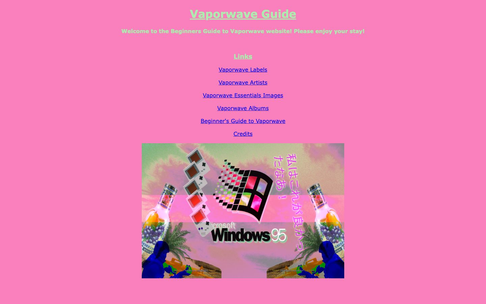

References / Website / 370
Vaporwave Guide (Neocities)
A fan-made beginner’s guide to vaporwave on a hot pink page, with a collage of the Windows 95 logo, Game Boys, palms, and Japanese text.
- Source
- thevaporwaveguide.neocities.org
- Style
- Vaporwave (agent-proposed, not yet reviewed by a person)
- Moods
- Kitsch, earnest, nostalgic
- Evidence
- Captured with
tools/capture.mjs(headless Chrome, 1440 × 900) on 28 September 2026 and inspected. The screenshot shows the first viewport; the measurement covers up to four screens. - Reviewed
- Rights
- Third-party work, stored with credit for commentary. License: unverified. Rights policy
Observed
- The whole page is flat hot pink; the title “Vaporwave Guide” and the welcome line are mint green, bold, and underlined.
- Six centred links in default blue underlined text list labels, artists, images, albums, a guide, and credits.
- A wide collage below shows a glitched Windows 95 logo and wordmark, a column of Game Boy handhelds, fruit-drink bottles, palm trees, blue statues, and vertical pink Japanese text over a pink-and-green sky.
Why it belongs
It is the style at its most amateur: all of it sits in one pasted image and a background colour. The measurement sees only flat colour and no shadows.
Measured
Machine-extracted by tools/extract-traits.js on . Full measurement.
- Type families
- Verdana (100%)
- Type scale ratio
- 1.44
- Median radius
- null px
- Mean chroma
- 0.51
- Palette
- #fa7fbd 80%
- #0000ee 11%
- #aaedad 9%

